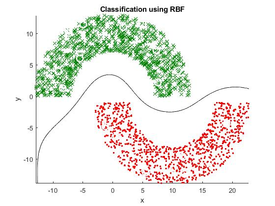

Worked as an undergraduate reasearch assistent in the topic of theoretical mathine learning and its implementation.
Above is the implementation of the Radial basis function algorithm for finidng the hyper plane, desicion boundary, n a given data set.